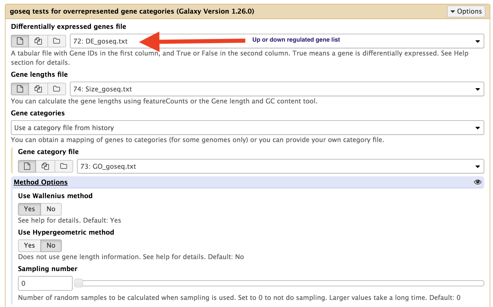

GOseq analysis¶
1. Ge the up and down regulated gene list. “bothDF” is the dataframe that contains both up and down-regulated genes from both EdgeR and DEseq2.
bothDF_down <- bothDF[bothDF$log2FoldChange <= -1,]
bothDF_up <- bothDF[bothDF$log2FoldChange >= 1,]
Convert to these dataframes into table with True or False values. Write the table to local directory.
DE_list_boolup <- as.data.frame(row.names(d) %in% bothDF_up$Row.names,
row.names = row.names(d))
DE_list_booldown <- as.data.frame(row.names(d) %in% bothDF_down$Row.names,
row.names = row.names(d))
write.table(DE_list_boolup,file="DE_goseq_up.txt",row.names=T,sep='\t',quote=F,
col.names = F)
write.table(DE_list_booldown,file="DE_goseq_down.txt",row.names=T,sep='\t',quote=F,
col.names = F)
Perform the GOseq analysis in Galaxy. You will need to perform the analysis for up and down regulated genes separately.

- Combine gene descriptions with up and down regulated genes. You can get the S_lycopersicum_Feb_2014.bed file from the Dropbox link on Bb.
annots_file <- 'S_lycopersicum_Feb_2014.bed'
# keep gene id and gene description columns
annots <- read.delim(annots_file,sep='\t',header=F)[,13:14]
# name the columns
names(annots) <- c('gene','description')
# combine gene expression and annotations
bothDF_genedesc <- merge(bothDF,annots, by.x = "Row.names",by.y='gene')
- To order your data using FDR, you use the following command in R.
bothDF_genedesc <- bothDF_genedesc[order(bothDF_genedesc$FDR), ]